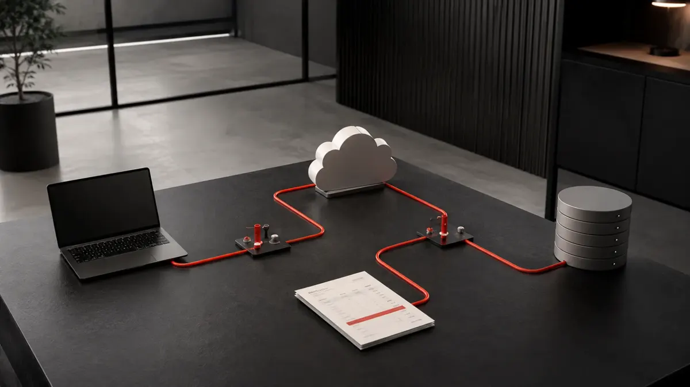
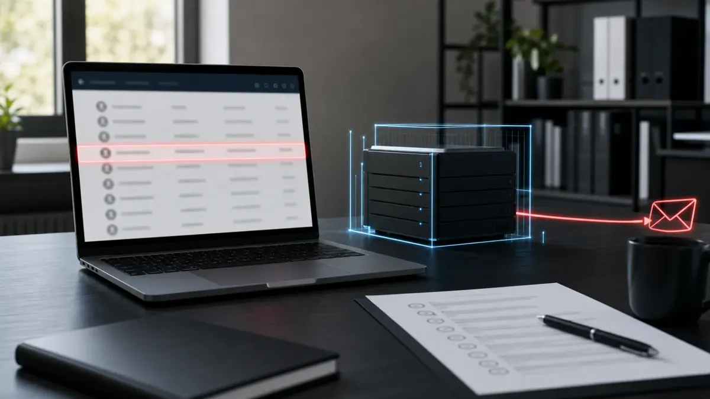
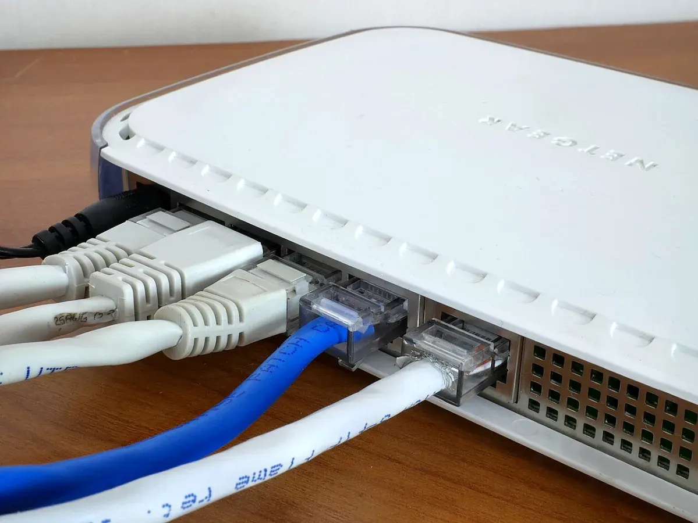

Insights
A clearer view.
AI at work. Security in practice. Clear thinking for the decisions ahead.
The Invoice Looks Right. The Approval Process Is Wrong
AI-assisted invoice fraud can impersonate directors, suppliers and entire email conversations. UK SMEs need payment controls that remain safe when the message looks convincing.
Read →
The Passkey Support Call Is the Attack
Attackers are impersonating IT support and using passkey or MFA updates to trick staff into authorising cloud access. Here is what UK SMEs should change now.

Your AI Agent Needs a Job Description and a Locked Door
AI agents can send messages, change records and use business systems. UK SMEs should control their identity, permissions, approvals, environment and off switch before granting autonomy.
The Computers You Forgot Were Computers
CCTV, access control, heating and production systems can become an internet-facing cyber risk when nobody treats them like computers.

Contact Data Is Enough to Start an Attack
The Department for Education breach is a reminder that names, roles, emails and phone numbers are not harmless. For SMEs, contact data can become phishing infrastructure.
When Opening the Email Is Enough
A zero-click Zimbra webmail campaign is a reminder that phishing awareness alone cannot protect every inbox. UK SMEs need patched mail systems, supplier evidence and useful monitoring.

The Attack Might Start with Your Helpdesk
Scattered Spider-style attacks show why password and MFA reset processes need stronger checks. UK SMEs should treat the helpdesk as a security control, not just a support function.
If the Cloud Stops, Does Your Business Stop Too?
UK regulators are treating major cloud providers as critical infrastructure. SMEs should take the same lesson: cloud services are convenient, but resilience still needs ownership.
Old VPN Passwords Are Still Keys to Your Business
The FortiBleed reports are a useful warning for UK SMEs: exposed firewall and VPN credentials can remain dangerous long after a patch is applied.
That Microsoft Code Request Might Not Be Yours
Device-code phishing uses the real Microsoft sign-in process, which makes it harder for staff to spot. UK SMEs need clear rules, stronger controls and better sign-in visibility.
AI Will Make Cyber Attacks Faster, Not Magic
Five Eyes agencies are warning that AI will speed up cyber attacks. For UK SMEs, the answer is not panic. It is faster patching, stronger identity controls and rehearsed recovery.
Seven Security Questions Your IT Supplier Should Be Able to Answer
Your MSP, cloud platforms and software suppliers can strengthen your security, but they also extend your attack surface. Here is what UK SMEs should ask before trust becomes exposure.
The University of Nottingham Breach: Lessons for Universities, Colleges and Schools
The University of Nottingham cyber incident shows why educational institutions remain a prime target for data theft and extortion. Here are the lessons leaders should act on now.
Your Software Has a Family Tree, and Attackers Know It
The NCSC is warning that attackers are compromising trusted software packages at scale. UK SMEs need to know what their websites, apps and integrations depend on.

AI Agents Need a Seatbelt Before They Get the Keys
NCSC and international partners are warning organisations to adopt agentic AI carefully. Here is what UK SMEs should put in place before AI tools can act for the business.
Think Before You Deploy: AI Agents, New Hires and Safe Delegation
The NCSC’s advice on agentic AI has a wider lesson for SMEs: whether you deploy an AI agent or hire a person, define the role, limit access and review performance regularly.

The Geopolitical Cyber Risk Hiding in Your Network Edge
State-linked cyber activity can feel remote, but the practical risk for UK SMEs often sits in exposed firewalls, VPNs, routers and remote access gateways.

Your Router Is Now Part of the Attack Surface
NCSC and international partners have warned that vulnerable small office routers are being used for DNS hijacking. Here is what UK SMEs should check now.

AI Phishing and Business Email Compromise: What UK SMEs Should Do Now
AI phishing and Business Email Compromise attacks are on the rise, with criminals using better-written emails, voice cloning, and supplier impersonation to target UK SMEs. Find out what you can do to protect your business.

Passkeys are not magic - but they are the right move
NCSC guidance makes the case for passkeys over traditional MFA. Here is what UK SMEs should do about adoption, recovery, and day-to-day account safety.